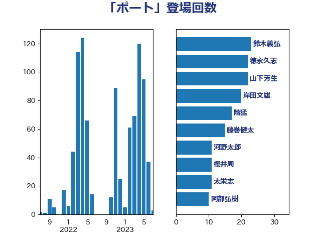

単語「ポート」

| 鈴木義弘 | 国民民主党 | 23 回 |
| 徳永久志 | 無所属 | 22 回 |
| 山下芳生 | 日本共産党 | 22 回 |
| 岸田文雄 | 自由民主党 | 20 回 |
| 階猛 | 立憲民主党 | 17 回 |
| 藤巻健太 | 日本維新の会 | 15 回 |
| 河野太郎 | 自由民主党 | 11 回 |
| 櫻井周 | 立憲民主党 | 11 回 |
| 太栄志 | 立憲民主党 | 11 回 |
| 阿部弘樹 | 日本維新の会 | 10 回 |
| 伊藤孝恵 | 国民民主党 | 10 回 |
| 田島麻衣子 | 立憲民主党 | 9 回 |
| 福島みずほ | 社会民主党 | 7 回 |
| 小西洋之 | 立憲民主党 | 7 回 |
| 宮本岳志 | 日本共産党 | 7 回 |
| 音喜多駿 | 日本維新の会 | 6 回 |
| 青柳仁士 | 日本維新の会 | 6 回 |
| 西村明宏 | 自由民主党 | 6 回 |
| 芳賀道也 | 国民民主党 | 6 回 |
| 石川大我 | 立憲民主党 | 6 回 |
| 斉藤鉄夫 | 公明党 | 6 回 |
| 川田龍平 | 立憲民主党 | 6 回 |
| 前原誠司 | 国民民主党 | 6 回 |
| 一谷勇一郎 | 日本維新の会 | 6 回 |
| ながえ孝子 | 無所属 | 6 回 |
| 鎌田さゆり | 立憲民主党 | 5 回 |
| 鈴木俊一 | 自由民主党 | 5 回 |
| 牧島かれん | 自由民主党 | 5 回 |
| 浜田聡 | NHK党 | 5 回 |
| 林芳正 | 自由民主党 | 5 回 |
| 後藤茂之 | 自由民主党 | 5 回 |
| 岸真紀子 | 立憲民主党 | 5 回 |
| 小野田紀美 | 自由民主党 | 5 回 |
| 三宅伸吾 | 自由民主党 | 5 回 |
| 馬淵澄夫 | 立憲民主党 | 4 回 |
| 鈴木庸介 | 立憲民主党 | 4 回 |
| 西岡秀子 | 国民民主党 | 4 回 |
| 藤岡隆雄 | 立憲民主党 | 4 回 |
| 萩生田光一 | 自由民主党 | 4 回 |
| 紙智子 | 日本共産党 | 4 回 |
| 田村智子 | 日本共産党 | 4 回 |
| 田嶋要 | 立憲民主党 | 4 回 |
| 漆間譲司 | 日本維新の会 | 4 回 |
| 松原仁 | 立憲民主党 | 4 回 |
| 末松信介 | 自由民主党 | 4 回 |
| 打越さく良 | 立憲民主党 | 4 回 |
| 平木大作 | 公明党 | 4 回 |
| 岬麻紀 | 日本維新の会 | 4 回 |
| 山田賢司 | 自由民主党 | 4 回 |
| 寺田学 | 立憲民主党 | 4 回 |
| 大西健介 | 立憲民主党 | 4 回 |
| 吉良よし子 | 日本共産党 | 4 回 |
| 上田清司 | 国民民主党 | 4 回 |
| 馬場雄基 | 立憲民主党 | 3 回 |
| 輿水恵一 | 公明党 | 3 回 |
| 赤池誠章 | 自由民主党 | 3 回 |
| 西銘恒三郎 | 自由民主党 | 3 回 |
| 福田昭夫 | 立憲民主党 | 3 回 |
| 牧山ひろえ | 立憲民主党 | 3 回 |
| 河西宏一 | 公明党 | 3 回 |
| 杉本和巳 | 日本維新の会 | 3 回 |
| 岩渕友 | 日本共産党 | 3 回 |
| 山本剛正 | 日本維新の会 | 3 回 |
| 宮崎雅夫 | 自由民主党 | 3 回 |
| 守島正 | 日本維新の会 | 3 回 |
| 天畠大輔 | れいわ新選組 | 3 回 |
| 大島敦 | 立憲民主党 | 3 回 |
| 大岡敏孝 | 自由民主党 | 3 回 |
| 城井崇 | 立憲民主党 | 3 回 |
| 國場幸之助 | 自由民主党 | 3 回 |
| 吉田宣弘 | 公明党 | 3 回 |
| 古賀之士 | 立憲民主党 | 3 回 |
| 古川元久 | 国民民主党 | 3 回 |
| 佐藤正久 | 自由民主党 | 3 回 |
| 伊波洋一 | 無所属 | 3 回 |
| 仁比聡平 | 日本共産党 | 3 回 |
| 仁木博文 | 無所属 | 3 回 |
| 中谷真一 | 自由民主党 | 3 回 |
| 世耕弘成 | 自由民主党 | 3 回 |
| 鬼木誠 | 立憲民主党 | 2 回 |
| 高橋千鶴子 | 日本共産党 | 2 回 |
| 高木啓 | 自由民主党 | 2 回 |
| 高木かおり | 日本維新の会 | 2 回 |
| 阿部司 | 日本維新の会 | 2 回 |
| 鈴木敦 | 国民民主党 | 2 回 |
| 金子道仁 | 日本維新の会 | 2 回 |
| 西村康稔 | 自由民主党 | 2 回 |
| 舟山康江 | 国民民主党 | 2 回 |
| 自見はなこ | 自由民主党 | 2 回 |
| 羽田次郎 | 立憲民主党 | 2 回 |
| 米山隆一 | 立憲民主党 | 2 回 |
| 石川博崇 | 公明党 | 2 回 |
| 石垣のりこ | 立憲民主党 | 2 回 |
| 石原正敬 | 自由民主党 | 2 回 |
| 石井苗子 | 日本維新の会 | 2 回 |
| 玉木雄一郎 | 国民民主党 | 2 回 |
| 猪瀬直樹 | 日本維新の会 | 2 回 |
| 渡辺創 | 立憲民主党 | 2 回 |
| 浅野哲 | 国民民主党 | 2 回 |
| 水岡俊一 | 立憲民主党 | 2 回 |
| 武井俊輔 | 自由民主党 | 2 回 |
| 櫛渕万里 | れいわ新選組 | 2 回 |
| 森本真治 | 立憲民主党 | 2 回 |
| 東徹 | 日本維新の会 | 2 回 |
| 杉尾秀哉 | 立憲民主党 | 2 回 |
| 本田顕子 | 自由民主党 | 2 回 |
| 庄子賢一 | 公明党 | 2 回 |
| 岡本あき子 | 立憲民主党 | 2 回 |
| 山田太郎 | 自由民主党 | 2 回 |
| 山本太郎 | れいわ新選組 | 2 回 |
| 山口壯 | 自由民主党 | 2 回 |
| 小沢雅仁 | 立憲民主党 | 2 回 |
| 小林史明 | 自由民主党 | 2 回 |
| 宮本徹 | 日本共産党 | 2 回 |
| 和田有一朗 | 日本維新の会 | 2 回 |
| 吉田はるみ | 立憲民主党 | 2 回 |
| 吉田とも代 | 日本維新の会 | 2 回 |
| 佐々木さやか | 公明党 | 2 回 |
| 伴野豊 | 立憲民主党 | 2 回 |
| 井上哲士 | 日本共産党 | 2 回 |
| 中川康洋 | 公明党 | 2 回 |
| 下条みつ | 立憲民主党 | 2 回 |
| 齊藤健一郎 | 無所属 | 1 回 |
| 高橋光男 | 公明党 | 1 回 |
| 高村正大 | 自由民主党 | 1 回 |
| 高木真理 | 立憲民主党 | 1 回 |
| 馬場伸幸 | 日本維新の会 | 1 回 |
| 須藤元気 | 無所属 | 1 回 |
| 青島健太 | 日本維新の会 | 1 回 |
| 阿部知子 | 立憲民主党 | 1 回 |
| 長妻昭 | 立憲民主党 | 1 回 |
| 長友慎治 | 国民民主党 | 1 回 |
| 鈴木宗男 | 日本維新の会 | 1 回 |
| 金城泰邦 | 公明党 | 1 回 |
| 野間健 | 立憲民主党 | 1 回 |
| 野上浩太郎 | 自由民主党 | 1 回 |
| 道下大樹 | 立憲民主党 | 1 回 |
| 足立敏之 | 自由民主党 | 1 回 |
| 赤嶺政賢 | 日本共産党 | 1 回 |
| 谷田川元 | 立憲民主党 | 1 回 |
| 西村智奈美 | 立憲民主党 | 1 回 |
| 藤川政人 | 自由民主党 | 1 回 |
| 船橋利実 | 自由民主党 | 1 回 |
| 美延映夫 | 日本維新の会 | 1 回 |
| 空本誠喜 | 日本維新の会 | 1 回 |
| 神谷政幸 | 自由民主党 | 1 回 |
| 神田憲次 | 自由民主党 | 1 回 |
| 礒崎哲史 | 国民民主党 | 1 回 |
| 石橋林太郎 | 自由民主党 | 1 回 |
| 石原宏高 | 自由民主党 | 1 回 |
| 石井正弘 | 自由民主党 | 1 回 |
| 石井拓 | 自由民主党 | 1 回 |
| 矢倉克夫 | 公明党 | 1 回 |
| 田所嘉徳 | 自由民主党 | 1 回 |
| 田中英之 | 自由民主党 | 1 回 |
| 田中健 | 国民民主党 | 1 回 |
| 片山大介 | 日本維新の会 | 1 回 |
| 片山さつき | 自由民主党 | 1 回 |
| 熊谷裕人 | 立憲民主党 | 1 回 |
| 湯原俊二 | 立憲民主党 | 1 回 |
| 浜田靖一 | 自由民主党 | 1 回 |
| 浅田均 | 日本維新の会 | 1 回 |
| 池下卓 | 日本維新の会 | 1 回 |
| 永岡桂子 | 自由民主党 | 1 回 |
| 水野素子 | 立憲民主党 | 1 回 |
| 横山信一 | 公明党 | 1 回 |
| 梅谷守 | 立憲民主党 | 1 回 |
| 柴田巧 | 日本維新の会 | 1 回 |
| 柴愼一 | 立憲民主党 | 1 回 |
| 柴山昌彦 | 自由民主党 | 1 回 |
| 柚木道義 | 立憲民主党 | 1 回 |
| 松本尚 | 自由民主党 | 1 回 |
| 松本剛明 | 自由民主党 | 1 回 |
| 松山政司 | 自由民主党 | 1 回 |
| 村田享子 | 立憲民主党 | 1 回 |
| 早稲田ゆき | 立憲民主党 | 1 回 |
| 日下正喜 | 公明党 | 1 回 |
| 平沼正二郎 | 自由民主党 | 1 回 |
| 平山佐知子 | 無所属 | 1 回 |
| 工藤彰三 | 自由民主党 | 1 回 |
| 川合孝典 | 国民民主党 | 1 回 |
| 岡田直樹 | 自由民主党 | 1 回 |
| 山際大志郎 | 自由民主党 | 1 回 |
| 山田俊男 | 自由民主党 | 1 回 |
| 山本香苗 | 公明党 | 1 回 |
| 山崎正恭 | 公明党 | 1 回 |
| 山口晋 | 自由民主党 | 1 回 |
| 尾崎正直 | 自由民主党 | 1 回 |
| 小林一大 | 自由民主党 | 1 回 |
| 寺田静 | 無所属 | 1 回 |
| 宮路拓馬 | 自由民主党 | 1 回 |
| 宗清皇一 | 自由民主党 | 1 回 |
| 大串正樹 | 自由民主党 | 1 回 |
| 塩川鉄也 | 日本共産党 | 1 回 |
| 塩崎彰久 | 自由民主党 | 1 回 |
| 堂込麻紀子 | 無所属 | 1 回 |
| 堀場幸子 | 日本維新の会 | 1 回 |
| 国光あやの | 自由民主党 | 1 回 |
| 嘉田由紀子 | 無所属 | 1 回 |
| 吉田統彦 | 立憲民主党 | 1 回 |
| 勝部賢志 | 立憲民主党 | 1 回 |
| 伊藤孝江 | 公明党 | 1 回 |
| 井坂信彦 | 立憲民主党 | 1 回 |
| 中谷一馬 | 立憲民主党 | 1 回 |
| 中西健治 | 自由民主党 | 1 回 |
| 中川郁子 | 自由民主党 | 1 回 |
| 中山展宏 | 自由民主党 | 1 回 |
| 上野通子 | 自由民主党 | 1 回 |
| 上月良祐 | 自由民主党 | 1 回 |
| 三木圭恵 | 日本維新の会 | 1 回 |
| たがや亮 | れいわ新選組 | 1 回 |